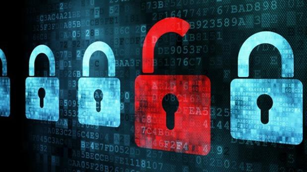
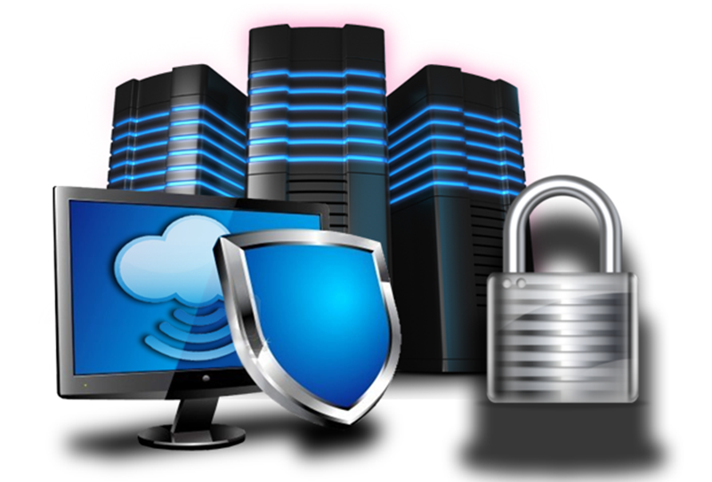

- Seguridad online
- Seguridad en software
- Seguridad en hardware
| Seguridad Online | Seguridad Software | Seguridad Hardware |
|---|---|---|
| Contar con unas buenas medidas de seguridad en nuestra red es uno de los aspectos que más debemos tener en cuenta, puesto que es en ella donde se suelen dar los mayores hackeos o delitos informáticos. Es decir, seguro que te suenan los virus, los robos de identidad, las intrusiones ilegales… todo esto forma parte de los delitos en la red y estos fallos pueden provocar daños muy graves e incluso irreparables. Para ello existen herramientas que nos ayudarán a mejorar la seguridad de nuestra red que son sencillas de utilizar y además ofrecen unos buenos resultados. Nos estamos refiriendo, por ejemplo, a los antivirus, aunque también debemos hacer uso de los programas antispyware.
El objetivo de todos estos elementos no es otro que dar la mayor protección a la red en la que trabajamos y así evitar lo máximo posible la entrada de amenazas que puedan provocar grandes problemas en el funcionamiento de la misma.
| Hasta hace muy poco, no se tenía en cuenta el software en relación a la seguridad informática, sin embargo de forma progresiva este elemento ha adoptado un mayor protagonismo en este sentido, puesto que se ha detectado que los fallos en el mismo pueden dañar seriamente nuestro sistema y ser una puerta abierta para los ciberdelincuentes. Las herramientas de seguridad informática de software son relativamente nuevas y se han creado para proteger a este elemento de errores frecuentes que han sido el foco de numerosos problemas. Entre otros podemos hablar de fallos a la hora de implementar el propio software o incluso un pequeño defecto de diseño, cualquier detalle puede ser determinante.  | El hardware es otro elemento que necesita seguridad, por lo que los fabricantes han creado herramientas que ofrecen este servicio, principalmente los cortafuegos y los firewalls de hardware, aunque también hay que decir que cada vez se confía más en los servidores proxy. Lo que hacen estas herramientas es controlar de forma exhaustiva el tráfico que se produce en la red, dotando al mismo tiempo al hardware con una seguridad mucho más potente. Así mismo, dentro de este contexto, también hay que destacar los módulos de seguridad de hardware, conocidos como HSM, que se encargan de proteger el cifrado. La seguridad de hardware es una de las más completas, ya que además de todo esto, otra de sus funciones es garantizar que los equipos informáticos no se expongan a grandes riesgos. Para conocer estos tipos de sistemas de seguridad en el entorno informático es conveniente que los profesionales se formen de una forma exhaustiva  |